Riset dan Outlook
Proyeksi makroekonomi dan tren industri berkala bagi divisi Strategi & Perencanaan serta C-Suite dalam menyusun arah bisnis bank.
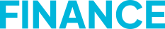
Satu platform untuk mendapatkan berita, riset, data, monitoring, dan insight yang relevan bagi profesional industri keuangan.
Laporan utama terkait regulasi & kebijakan, dinamika korporasi, dan wawancara khusus yang diperbarui setiap hari.
Pantauan berita, isu, dan tren terkini dari cakupan yang luas dengan dukungan Unimind Intelligence.
Tanya, rangkum, bandingkan, dan pahami info dari sumber tepercaya dengan AI untuk mengambil keputusan cepat.
Ringkasan laporan terkurasi dan analisis penting yang relevan dengan industri untuk memperkaya wawasan Anda.
Forum diskusi eksklusif dengan profesional lintas sektor untuk bertukar pandangan dan mendapatkan insight dari pemimpin industri.
Akses tanpa batas ke ePaper dan seluruh konten premium Kompas.id sebagai pelengkap informasi strategis Anda.
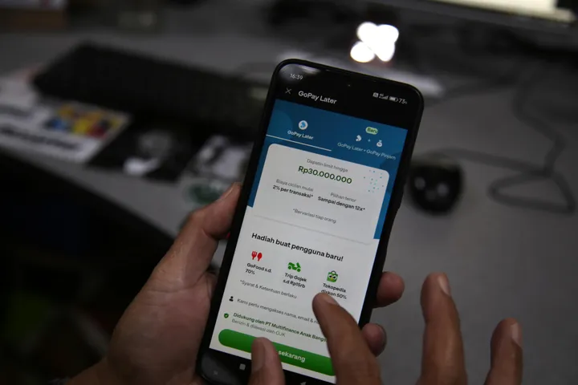
LAPORAN UTAMA Survei Litbang Kompas: Senjakala Kartu Plastik dan Kanibalisasi ”Paylater”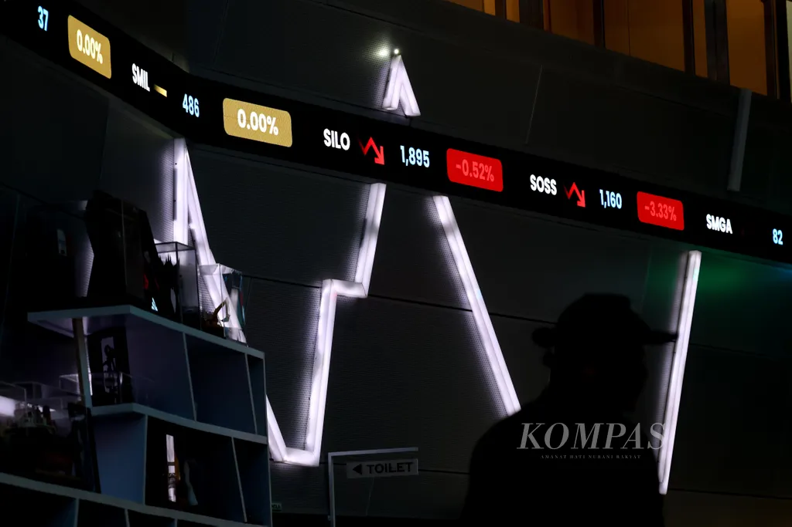
WAWANCARA KHUSUS Anatomi Koreksi IHSG di Tengah Siklus Suku Bunga Global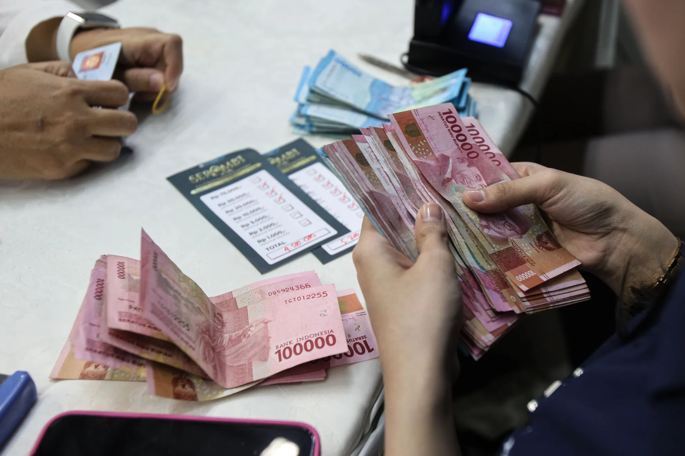
LAPORAN UTAMA ”Universal Banking”, Angin Segar bagi Industri Perbankan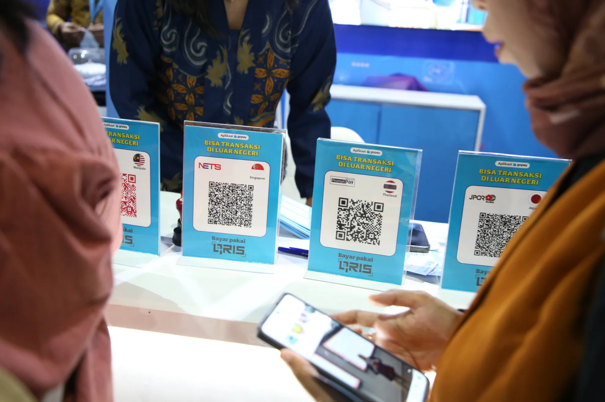
FINANCE Seni Perbankan Menggaet Hati Nasabah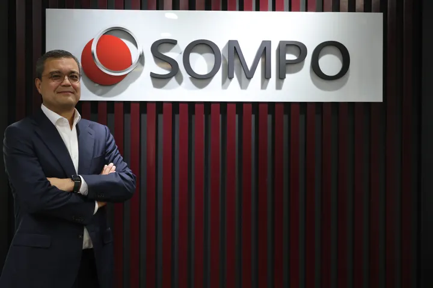
WAWANCARA KHUSUS Entitas Syariah Perdana Sompo, Momentum Perluas Pasar Asuransi Takaful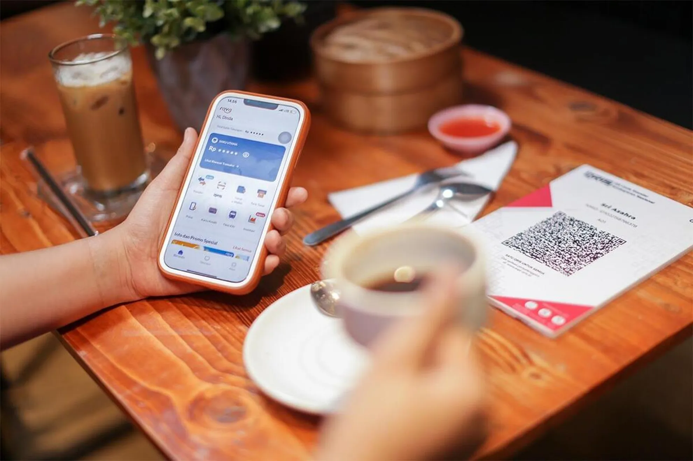
LAPORAN UTAMA Universal Banking: Peluang Bisnis Baru dan Tantangan Konsolidasi IndustriProyeksi makroekonomi dan tren industri berkala bagi divisi Strategi & Perencanaan serta C-Suite dalam menyusun arah bisnis bank.
Monitoring tren dan sentimen pemberitaan terkini di media online dan media sosial.
Data primer perilaku riil nasabah yang berguna bagi divisi Manajemen Risiko guna deteksi dini kredit bermasalah.
Analisis pasal krusial draf aturan baru OJK/BI bagi tim Legal serta Compliance guna mitigasi risiko regulasi.
Dinamika lobi kebijakan, aksi korporasi serta manuver pasar bagi Pengambil Keputusan Bisnis membaca arah industri ke depan.
Benchmark remunerasi, dinamika SDM, dan perlindungan hukum bagi praktisi HR, kepala cabang, serta analis pembiayaan.
Peta arus kas dan kelayakan ekosistem klaster UMKM bagi analis kredit komersial dan multifinance untuk ekspansi pembiayaan.
Kajian objektif dampak aturan di lapangan guna menjembatani kepentingan asosiasi industri dan regulator.
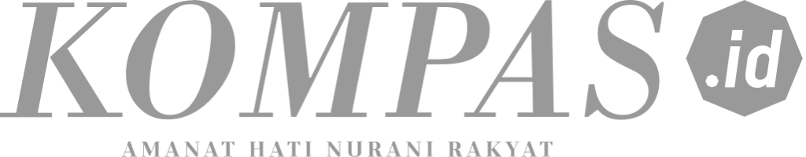
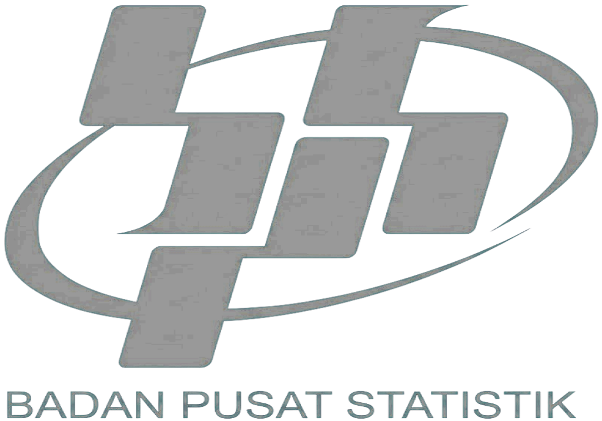
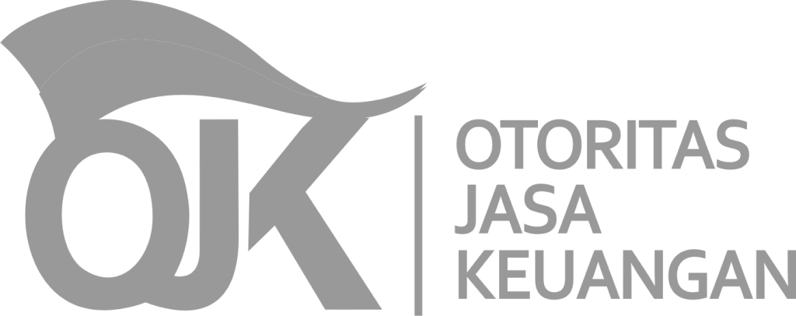
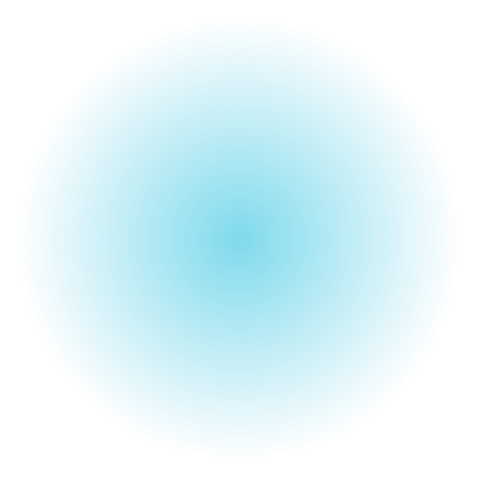